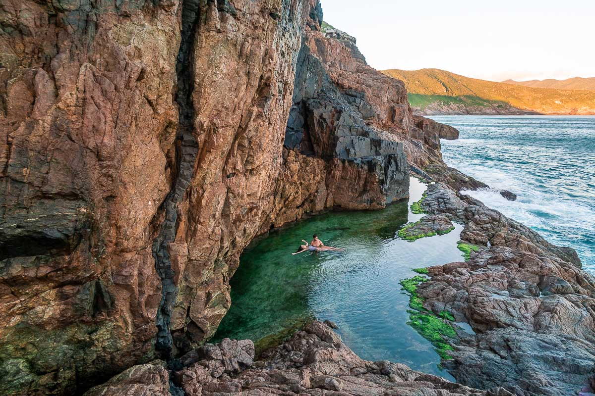
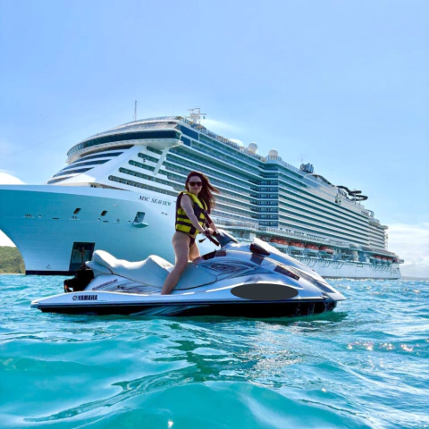
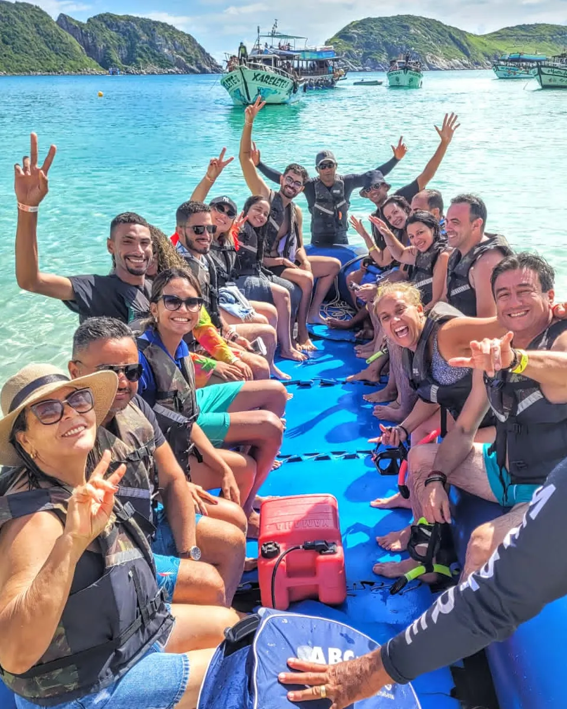
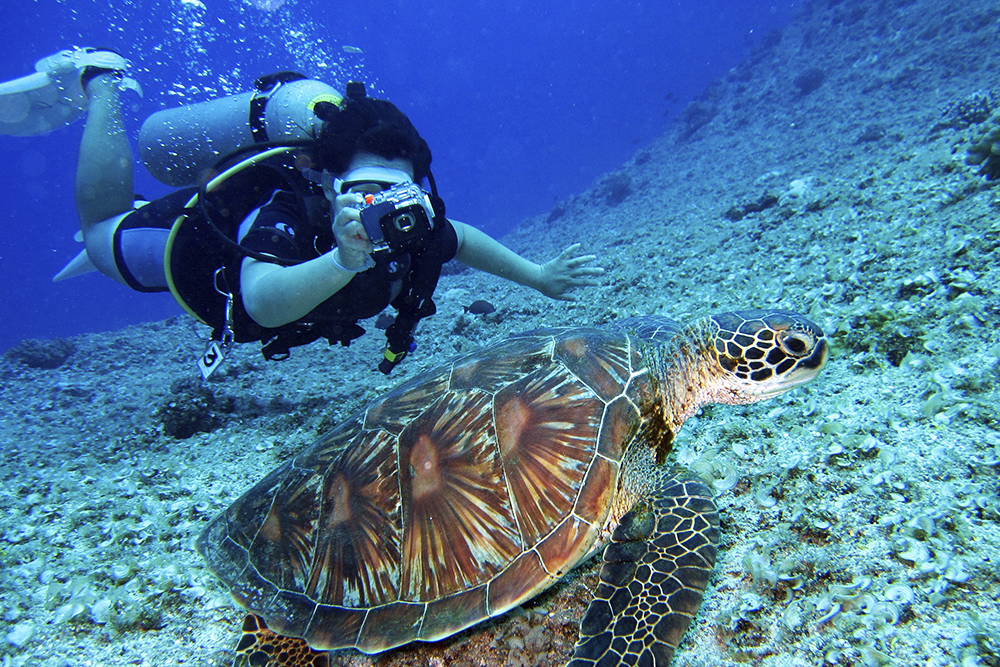
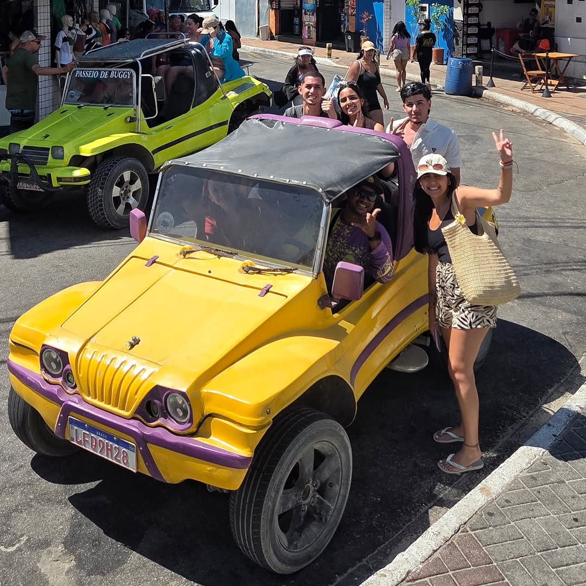
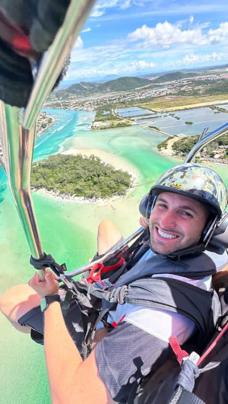
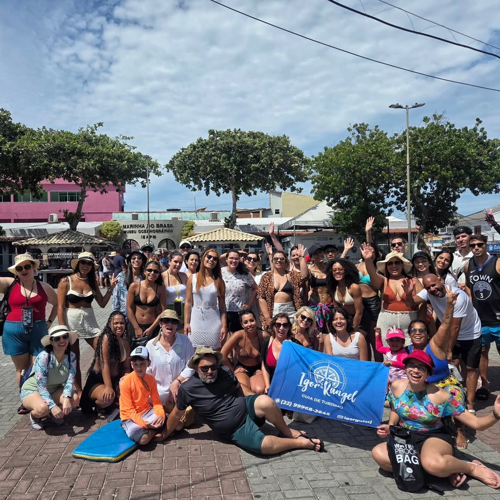
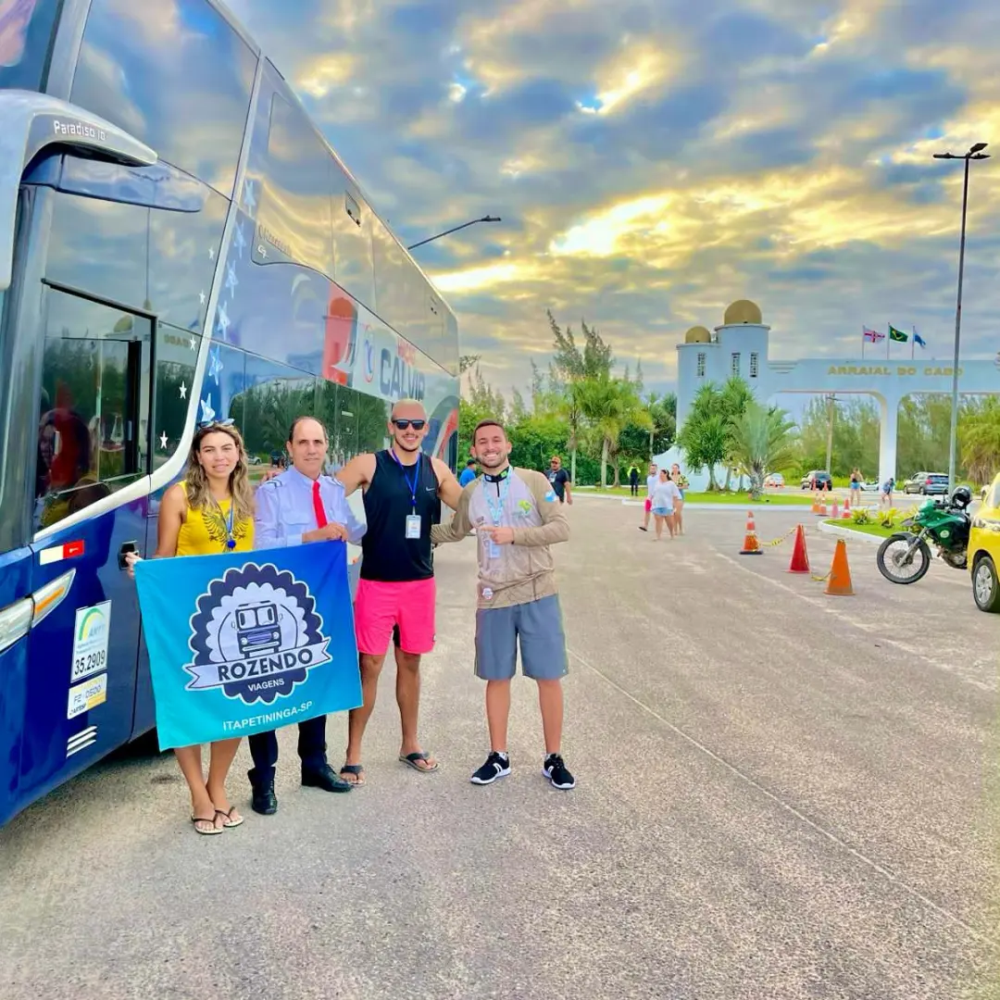
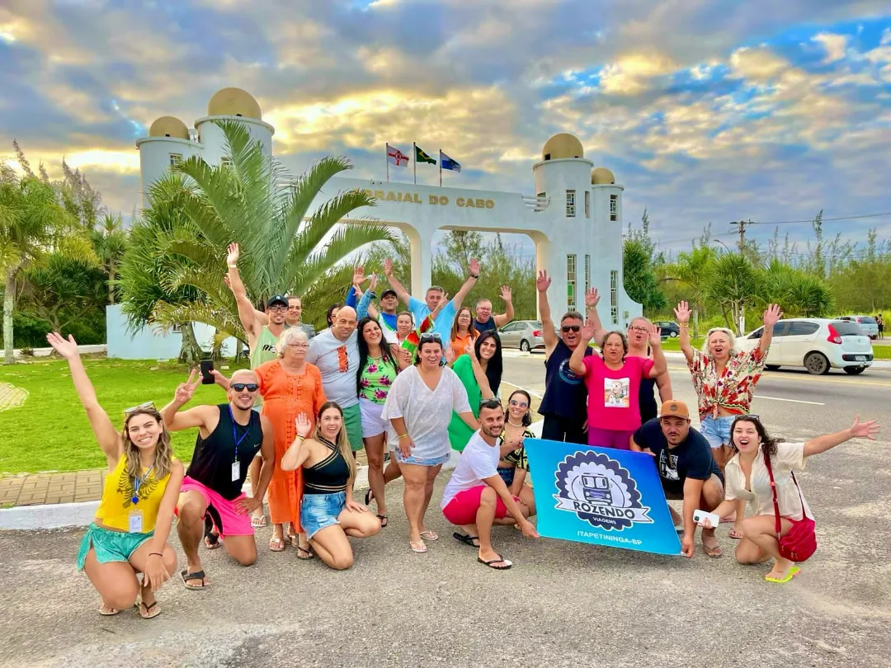
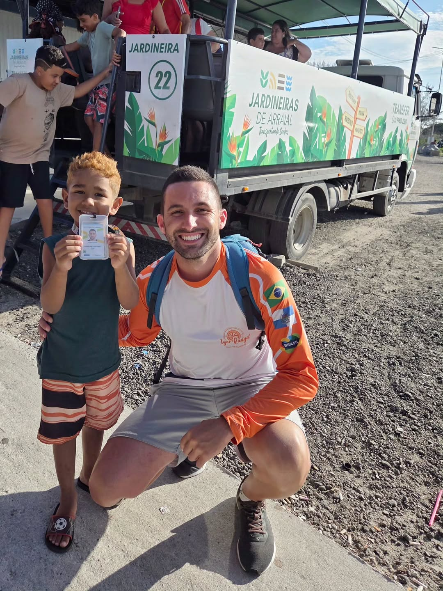

Paisagens deslumbrantes, águas cristalinas e experiências inesquecíveis esperando por você.

Trilhas

Jet Ski

Passeio de Barco

Mergulho

Bugre

Voo Paramotor
Selecione a cidade que deseja explorar e monte seu próximo passeio individual ou em grupo na Região dos Lagos.
Conheça alguns dos cenários mais impressionantes do litoral brasileiro. Passeios de barco, trilhas, mergulho e experiências únicas em Arraial do Cabo, Búzios e Cabo Frio.
Escolher meu passeioem
cidades
+ de
trilhas
+ de
praias
+ de
experiências





“Foi incrível. @micheleturismoes realizando sonhos através do turismo. Gratidão @igorguiarj por nos apresentar esse paraíso.”
— Eliane, Arraial do Cabo“Resolvi vir aqui registrar meu sincero agradeço a @viajandobrasilafora , na figura da Guia Sol e do Guia Igor que tornaram cada momento especial...foi um presente de aniversário para meu pequeno Valentin e ficará para sempre na memória dele esse paraíso que vocês nos apresentaram 🔥👏😍”
— Michele, Rio de Janeiro“Que energia maravilhosa desta viagem , simplesmente perfeita e incrível cada momento dessa viagem a Arraial , ficou um gostinho de quero mais 🥹🥰.... A guia Sol um amor de pessoa , muito prestativa e sempre presente , o guia Igor sempre prestativo e atencioso.... Amei tudo desta viagem incrível 😍”
— Maria, Minas Gerais
Sou Igor Rangel, guia de turismo profissional, formado desde 2016, com credenciamento como Guia Regional (RJ), Guia Nacional e Guia América do Sul.
Atuo no turismo receptivo desde 2017, oferecendo acompanhamento completo para grupos de excursão e passeios individuais, com planejamento de roteiros, organização de passeios e suporte em todas as etapas da viagem.
Trabalho nas cidades de Arraial do Cabo, Armação dos Búzios e Cabo Frio. Sou cabofriense e utilizo meu conhecimento local para proporcionar experiências seguras, bem organizadas e personalizadas, conectando cada visitante ao melhor da Região dos Lagos.
Escolha datas, estilo de passeio e quantidade de pessoas — eu te envio as melhores opções.
FALAR NO WHATSAPP Ver mais no Instagram